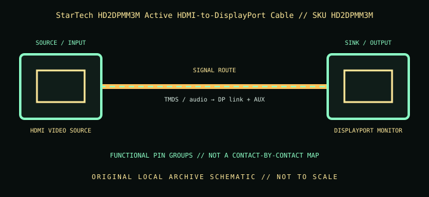

[ INDIVIDUAL COMPONENT // CABLES & ADAPTERS ]
StarTech HD2DPMM3M Active HDMI-to-DisplayPort Cable
A 3 m active converter cable for HDMI-source-to-DisplayPort-display installations, with a separate USB-A power plug; the direction is the reverse of most DP-to-HDMI adapters.

IDENTIFICATION: Catalog SKU: HD2DPMM3M. Record the complete label, regional suffix, hardware model/revision, and cable length printed on the specimen; nearby model variants are not interchangeable by assumption.
Specifications & connector revisions
| Catalog subcategory | Display cables and adapters |
|---|---|
| Manufacturer / SKU | StarTech HD2DPMM3M Active HDMI-to-DisplayPort Cable — HD2DPMM3M |
| Connector ends / length | HDMI Type-A male source → full-size DisplayPort male display; USB-A male auxiliary power lead; 3 m (10 ft) total cable length. |
| Protocol and revision | This active cable converts HDMI 1.4-source video to DisplayPort 1.2 display signaling and is rated up to 3840 × 2160 at 30 Hz. The HDMI source must supply the required compatible signal; the DisplayPort monitor must accept the advertised timing. USB power is required for conversion electronics. |
| Signal path / pinout | HDMI source video/audio/control and shield enter the active converter, which regenerates a DisplayPort stream toward the monitor; the USB-A lead supplies operating power. HDMI video pins are not wired directly to DP lane pins. It is a one-way converter, not a passive cable. |
| Mode and bandwidth caveats | The 3 m run and active electronics need stable USB power; attach USB power before diagnosing a blank display. The stated 4K ceiling is 30 Hz, not 4K60. Avoid adding extensions or direction-reversing gender changers; if compatibility is uncertain, test the exact source and display directly. |
Compatibility & direction
Use only from an HDMI-output computer/player/console to a DisplayPort-input monitor. Connect the auxiliary USB-A lead to a powered USB port as specified by StarTech. It will not connect a DP computer to an HDMI television, and it is not a USB display adapter. Confirm the display accepts 4K30 and any required audio/protected-content mode.
Handling & archival notes
Keep the stated source and sink ends in their specified direction; do not force keyed connectors or use this product as an assumed voltage/pinout substitute for a superficially similar cable. Support the tether during connection, keep contacts clean and dry, and avoid tight bends at molded strain reliefs.
For the archive, photograph both connector faces, labels, packaging SKU, length, and revision. If a mode is tested, record source model/GPU and firmware, sink model/firmware, intermediate adapters, cable run, resolution, refresh rate, chroma/HDR, and whether HDCP succeeds. Test results apply to that exact chain, not all variants.
Manufacturer and standards sources
- StarTech.com — HD2DPMM3M HDMI to DisplayPort cableManufacturer product description, active conversion, and direction.
- StarTech.com — HD2DPMM3M datasheet (PDF)Manufacturer datasheet supporting exact cable length and 4K30 specification.
Maximum modes are source-, sink-, firmware-, signal-path-, and revision-dependent. Manufacturer documentation for the exact SKU and hardware model takes precedence over family names and connector appearance.